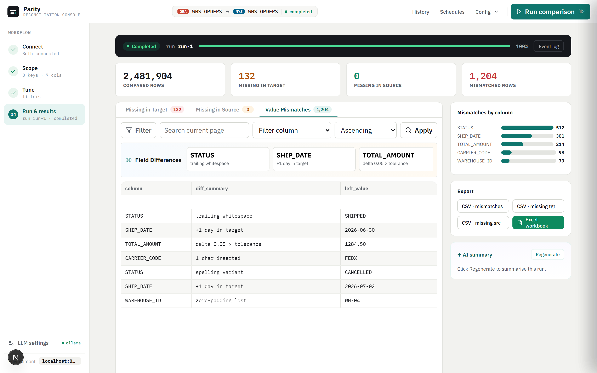
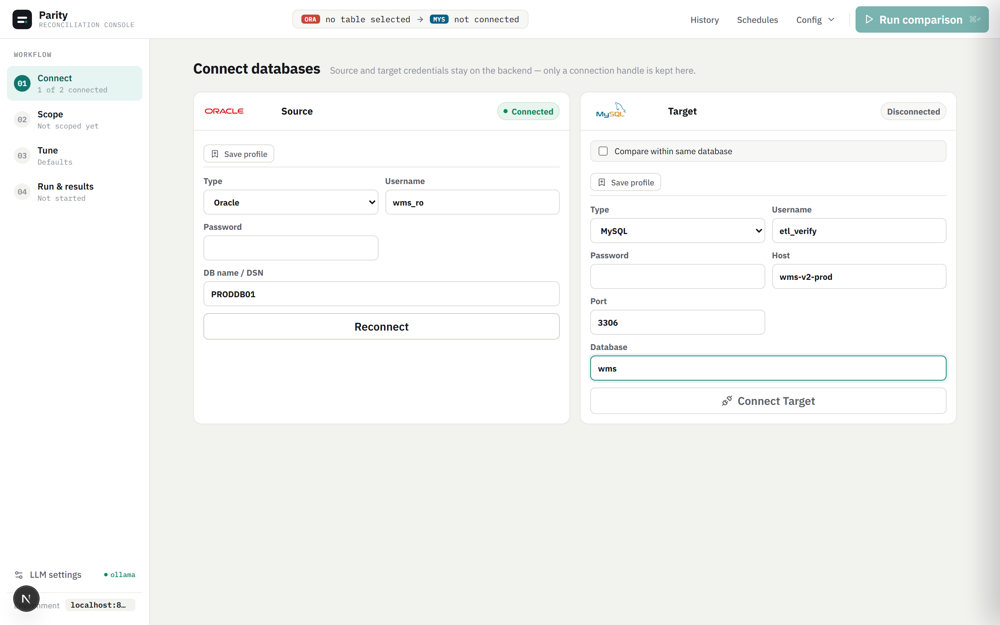
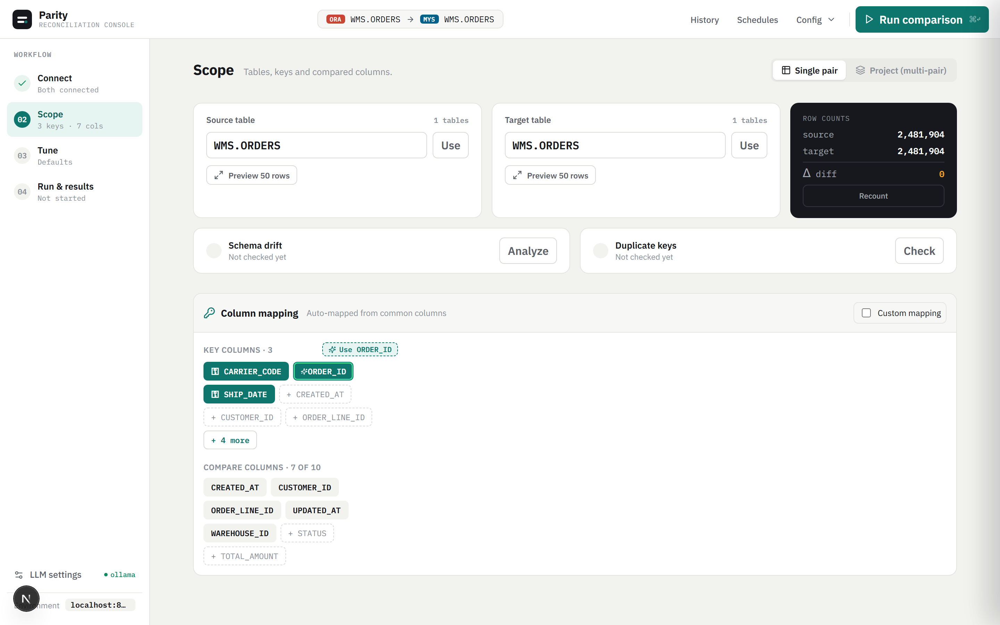
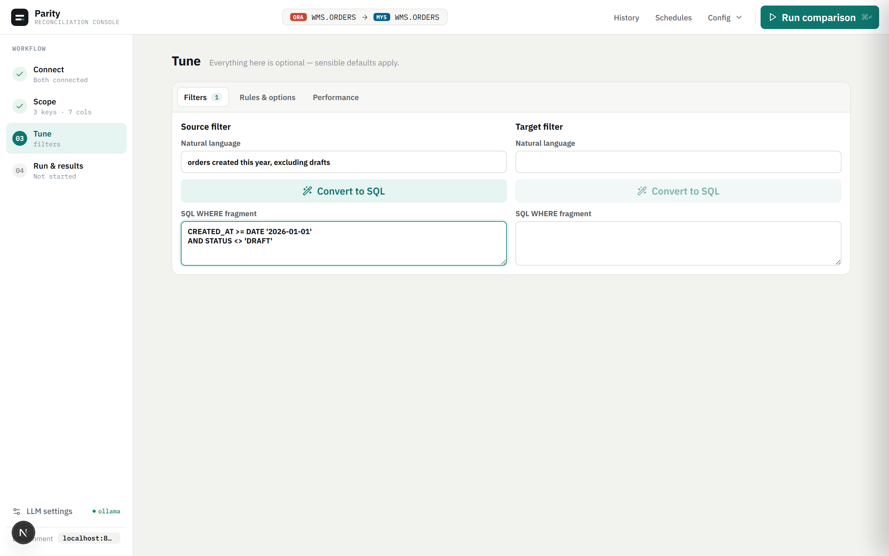

Back to portfolio
Oracleenterprise database support
MySQLcross-database comparison
DuckDBpaginated result storage
AIGroq and Ollama analysis
Database reconciliation
Parity
A FastAPI and Next.js database reconciliation tool for validating source and target tables across Oracle, MySQL, and PostgreSQL — with column mapping, batch processing, paginated DuckDB result storage, and AI-assisted mismatch analysis.

Problem
Data reconciliation gets messy when schemas and systems differ.
QA and data teams often need to prove that migrations, integrations, ETL jobs, or system replacements produce equivalent data. Manual comparison in spreadsheets does not scale, especially when tables have different column names, business rules, filters, and large row volumes that cannot fit in memory.
What the tool solves
- Compares source and target rows using single or composite keys across Oracle, MySQL, and PostgreSQL.
- Maps columns across different table schemas and applies per-column comparison rules.
- Supports tolerance, trimming, case-insensitive comparison, and derived columns.
- Stores comparison results in DuckDB so large result sets are paginated without re-running queries.
- Summarises mismatch patterns using Groq (primary) or Ollama (local fallback) with full privacy control.
Case-study snapshot
Why this matters for data QA work.
Parity grew from a real testing problem: proving that two systems agree when their schemas, keys, filters, and business rules do not line up neatly. The refactored version adds a purpose-built FastAPI backend and Next.js operations console around the comparison engine, replacing the original Streamlit prototype with a maintainable, extensible architecture.
Data QA understanding
Models the real problems in migration and integration testing: mismatched schemas, composite keys, null handling, numeric tolerances, missing rows, schema drift, and derived values.
Architecture discipline
Separates database adapters, comparison engine, batch strategies, result storage, ETL rules, AI analysis, and the Next.js console into clear, independently testable responsibilities.
Scale-aware design
DuckDB stores paginated comparison results so the UI can browse large mismatch sets without re-running the comparison query. Pandas, Polars, and Dask handle different data scale profiles.
Safe sharing
Uses sanitized visuals and capability descriptions without exposing connection strings, credentials, production schemas, query history, or customer records.
Feature depth
A focused reconciliation workbench.
Multi-database connections
Connects Oracle, MySQL, and PostgreSQL source and target systems through a wizard-style Next.js console. Connection profiles are saved locally so frequently used systems do not need re-entry.
Flexible comparison setup
Supports key selection, compare-column selection, custom mappings, filters, derived columns, row hashes, and per-column comparison rules including tolerance and case-insensitive matching.
Batch processing
Handles practical data sizes with numeric range batching, ordered seek batching, and row-based estimation to avoid one giant comparison pass on large tables.
Paginated result explorer
Comparison results — missing source rows, missing target rows, and field-level mismatches — are stored in DuckDB and served through paginated API endpoints so the frontend stays responsive on large result sets.
Schema drift detection
Detects column additions, removals, and type changes between source and target schemas before or during comparison runs, surfacing structural differences alongside data mismatches.
AI-assisted analysis
Groq (primary) or Ollama (local privacy-preserving fallback) summarises discrepancy patterns, explains probable mismatch causes, and supports natural-language-to-SQL filter queries in the result explorer.
Duplicate detection
Identifies duplicate rows in source and target datasets as part of the comparison pipeline, flagging data quality issues that can cause inflated mismatch counts.
Test coverage
pytest covers comparison behaviour, duplicate detection, auto-mapping, numeric tolerance, row hashing, ETL rules, and database adapter logic. Playwright smoke tests cover the Next.js frontend.
Product view
Four steps, one reconciliation console.
Screens from the redesigned Next.js console, populated with sanitized demo data — no real connection strings, schemas, or records.

Connect
Source and target credentials stay on the backend — only a connection handle is kept in the browser. Saved profiles skip re-entry for frequently used systems.

Scope
Pick source and target tables, see row counts and health checks at a glance, and map key and compare columns with recommended-key suggestions.

Tune
Optional filters, rules, and performance settings — including natural-language-to-SQL filter generation — with sensible defaults for everything else.
Run & results
Paginated mismatch, missing-source, and missing-target tabs, a per-column mismatch breakdown, field-level diffs, and an AI-generated summary of discrepancy patterns.
Architecture
Next.js operations console over a FastAPI comparison engine.
The refactored architecture separates the Next.js UI from the FastAPI backend, which owns the comparison engine, database adapters, DuckDB result store, and AI analysis. Legacy Streamlit UI remains as a fallback interface only.
Next.js console
Wizard steps: connect, map, rules, run, results.
Wizard steps: connect, map, rules, run, results.
->
FastAPI backend
Comparison runs, paginated results, schema drift.
Comparison runs, paginated results, schema drift.
Comparison engine
Keys, mappings, ETL rules, batches, row hashes.
Keys, mappings, ETL rules, batches, row hashes.
->
DuckDB result store
Paginated mismatches, missing rows, run history.
Paginated mismatches, missing rows, run history.
DB adapters
Oracle, MySQL, PostgreSQL connections.
Oracle, MySQL, PostgreSQL connections.
->
AI analysis
Groq (primary) or Ollama (local fallback).
Groq (primary) or Ollama (local fallback).
Setup and use
- Start the development stack using the project script (
.\start-dev.ps1). - Open the Next.js console and connect source and target databases through the wizard.
- Select tables, choose keys, configure column mappings, filters, and comparison rules.
- Run the comparison and monitor progress through the run monitor.
- Browse paginated mismatches, missing rows, and field-level diffs in the result explorer.
- Export results to CSV or Excel, or generate AI summaries for root-cause analysis.
Tech stack
This page describes capability and architecture only. It does not include database credentials, .env files, schemas, or customer data.